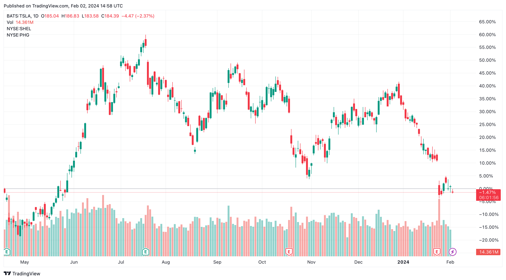
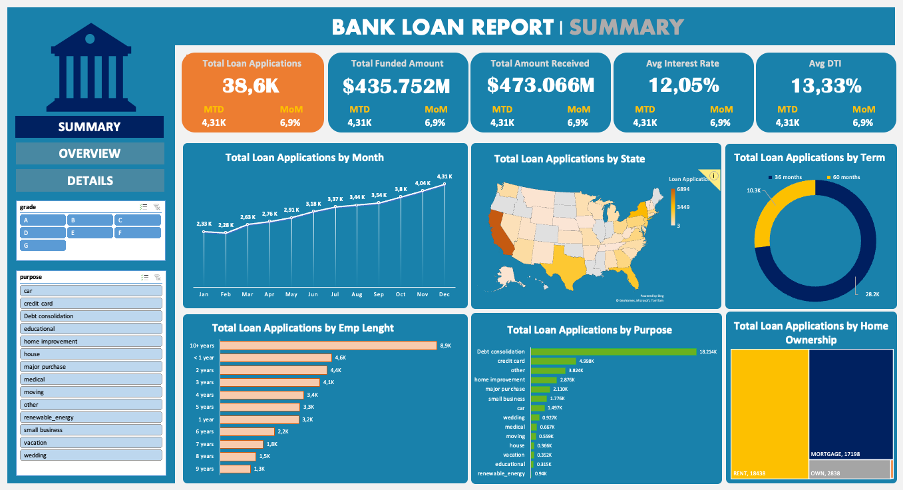
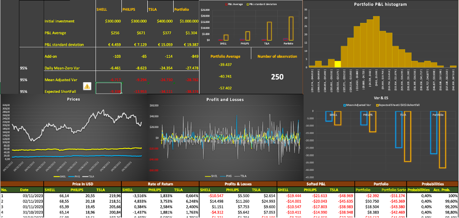

In this project, I analyze three stocks:
Tesla (TSLA), Philips (PHG), and Shell (SHEL).
The exploration involves generating summary statistics, visualizations, risk and return analysis, and lagging indicators to understand stock price trends.


The objective of the project is to identify potential customers for the company's calls. Achieving this involves data cleaning for improved readability. This includes removing unnecessary columns, standardizing phone numbers, eliminating null values, and removing extra spaces. The provided code demonstrates the identification of suitable numbers for calling.

This SQL testing initiative ensures the accuracy and reliability of Tableau reports within the context of HR analytics. By meticulously validating data through SQL queries, this process guarantees the integrity of HR-related insights presented in Tableau visualizations.

The purpose of the project is to conduct comprehensive data analysis on an e-commerce dataset using SQL. By exploring various aspects such as customer orders product performance, sales trends, and operational efficiency, the project aims to uncover actionable insights that can inform strategic decision-making and drive business growth in the competitive e-commerce landscape.

Tableau Dashboards for projects on Loan Book Tracking, HR Analytics, and AirnBnB’s Price in Amsterdam. Explore the Loan Book Tracking project, where we analyze loan data to track performance and identify trends. Delve into our HR Analytics project, offering comprehensive insights into workforce dynamics and employee attrition. Additionally, uncover the intricacies of Airbnb pricing in Amsterdam, as we dissect pricing trends, and demand fluctuations influencing rental rates in Amsterdam city.

The purpose of analysing bank loan data is used to assess risk, make decisions, and manage portfolios. Banks use data-driven models to evaluate creditworthiness, predict defaults, and optimise lending terms. Data analysis also helps with fraud detection, regulatory compliance, and providing insights for tailored loan products and marketing strategies.

This Excel project delves into the exploration of Historical Value at Risk (VaR) and Expected Shortfall for three prominent stocks: Tesla, Shell, and Philips. By leveraging historical financial data, the project aims to quantify the potential financial risk associated with these stocks through the calculation of VaR and Expected Shortfall.